OpenShift Dev Spaces
Cloud IDE with RHDA (Trusted Profile Analyzer / Dependency Analytics) and a 3-command journey.
Product page →
Two planes: Artifact Hub flags stock commons-io inside the WildFly
image scan;
the app builds with Lightwell .rhlw coordinates via Nexus.
RHDA still lists OSV findings on those GAVs — and shows Red Hat remediations available
(not an all-green “zero CVE” badge on the demo validated tier).
Official Lightwell mark from redhat.com/en/lightwell
Official Red Hat technology icons (console.redhat.com) used for product recognition.
Cloud IDE with RHDA (Trusted Profile Analyzer / Dependency Analytics) and a 3-command journey.
Product page →Tekton pipeline builds the WAR via Nexus→Lightwell and deploys the JBoss/WildFly app.
Product page →Contingency image published by GitHub Actions (Maven direct to Lightwell, no Nexus).
Product page →DevSpaces / Tekton → Nexus → Lightwell registry; GHA contingency → image registry → JBoss console.
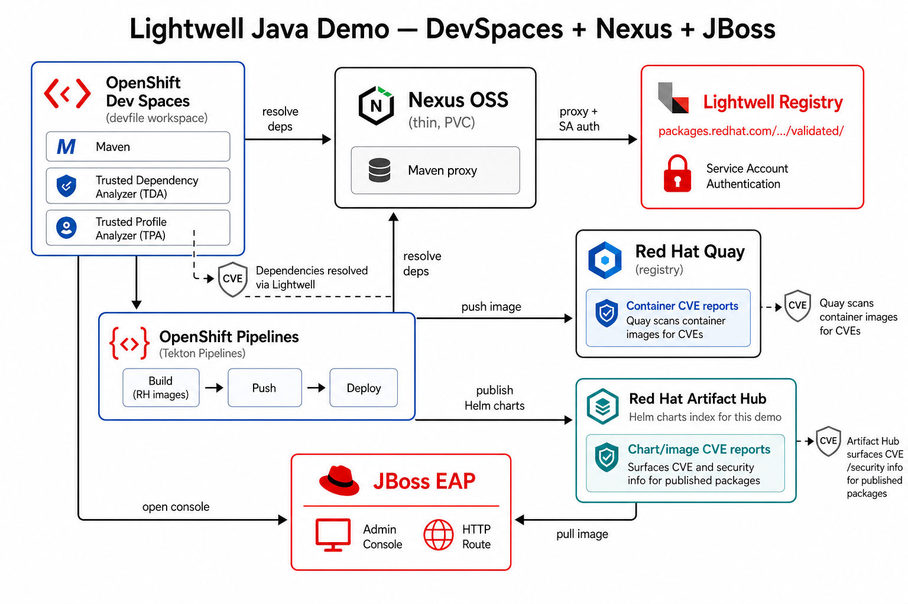
Factory URL (OpenShift Dev Spaces / Developer Sandbox): workspaces.openshift.com/#…/demo-lightwell
helm upgrade --install demo charts/demo-lightwell … with Lightwell SA in values.
.rhda/.
Then open app/pom.xml and run Red Hat Dependency Analytics Report
(Command Palette, pie-chart icon, or right-click). The terminal alone never opens the HTML report.
Live Developer Sandbox project maximilianopizarro5-dev (adjust namespace/host for your cluster).
Management credentials come from Secret jboss-admin (baked into the image via add-user.sh).
| Surface | URL | Credentials |
|---|---|---|
| App home | jboss-app-…/ | none |
| Health JSON | …/health | none — expect commons-io: 2.11.0.rhlw-00001 |
| HAL Management Console | jboss-app-mgmt-…/console | admin / Admin#123 |
| Nexus UI | nexus-…/ | demo admin (chart default admin123) |
HAL console notes
Use the management Route host (not the app Route). Leave the Route path empty so both
/console and /management work on the same host — a /console-only path breaks Bootstrap (503).
Login: username admin, password Admin#123 (override via Secret jboss-admin keys username / password).
If the browser console shows /management 403 and “Authentication required” while Keycloak adapter is 404,
WildFly rejected the HAL Origin header. The chart sets MANAGEMENT_ALLOWED_ORIGINS to the management Route HTTPS URL
(http-interface allowed-origins). Keycloak 404 is expected — this demo uses local ManagementRealm digest auth, not Keycloak.
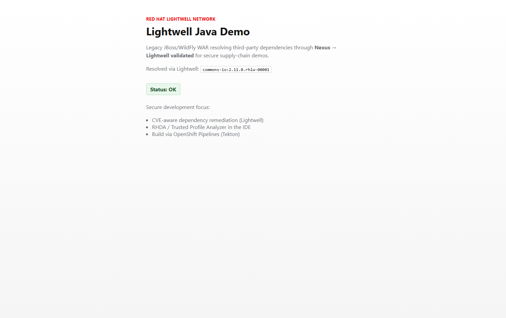
commons-io:2.11.0.rhlw-00001.
Extension redhat.fabric8-analytics (Trusted Profile Analyzer / Dependency Analytics).
After analyze-cves, open app/pom.xml → Command Palette →
Red Hat Dependency Analytics Report.
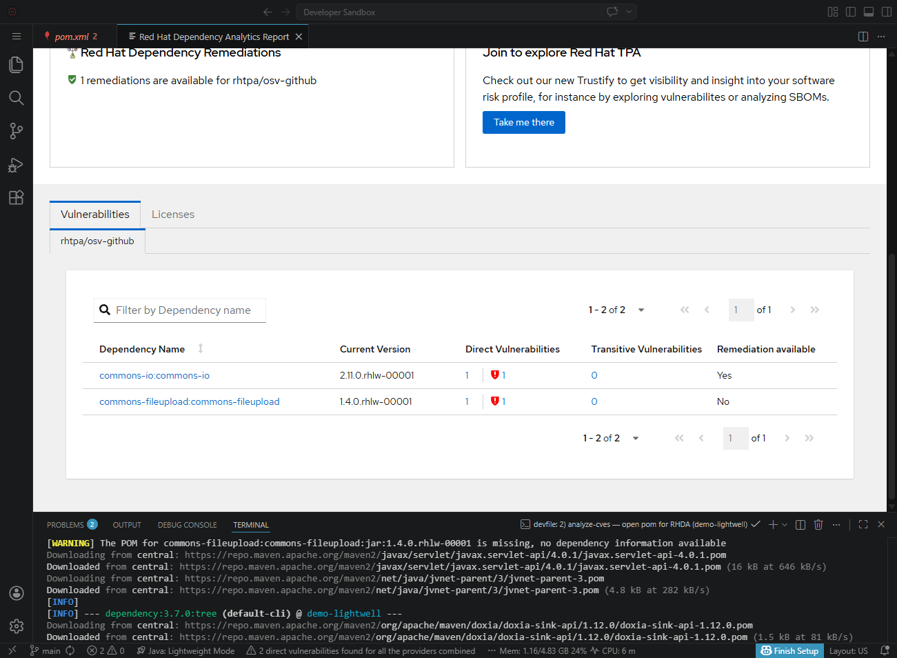
2.11.0.rhlw-00001 / 1.4.0.rhlw-00001).
Green banner = remediations available; table still lists Direct Vulnerabilities from OSV
(validated demo is not an all-green “zero CVE” badge).
Three different signals — do not expect RHDA to go “all green” just because the pom uses
.rhlw from the validated demo tier.
quay.io/wildfly/wildfly:27.0.1…commons-io:2.11.0 in layers → CVE-2024-475542.11.0.rhlw-00001 GAVapp/pom.xml → Nexus → Lightwell validated demo…rhlw-00001 (not Maven Central stock)commons-io: 2.11.0.rhlw-00001| Tool | What it looks at | What you should see |
|---|---|---|
| Artifact Hub | Chart artifacthub.io/images (WildFly) |
CVEs on stock jars in the image (e.g. commons-io 2.11.0) |
| Nexus / health endpoint | Resolved Maven artifacts | 2.11.0.rhlw-00001 from Lightwell proxy |
| RHDA / TPA (IDE) | pom.xml + OSV / Red Hat remediation data |
Still may show Direct Vulnerabilities on .rhlw rows and
“Red Hat Dependency Remediations available” (the green check) |
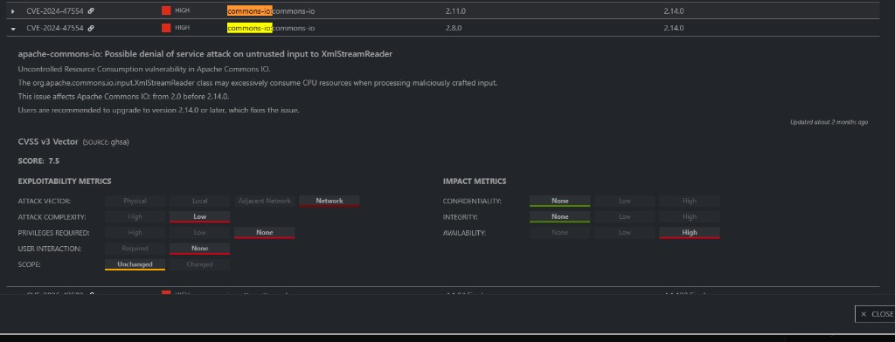
commons-io 2.11.0 inside the WildFly image
(not the Lightwell Maven GAV).
Why it is not all green
RHDA queries vulnerability databases (here rhtpa/osv-github).
Those databases often still associate CVEs with the upstream lineage even when you consume a
Lightwell .rhlw rebuild from the public validated demo catalog.
What Lightwell + RHDA add in this demo is: you are on Red Hat coordinates, and the report
surfaces remediation availability (see RHDA report).
Clearing every OSV finding is the product path
(subscription remediated tier + newer .rhlw-* builds), not a promise of the sandbox demo alone.
For deeper remediations with a subscription, see Day-2: remediated tier.
Lightwell remediates vulnerable Java deps; RHDA/TPA surfaces CVEs in the IDE; Tekton builds through Nexus→Lightwell on OpenShift.
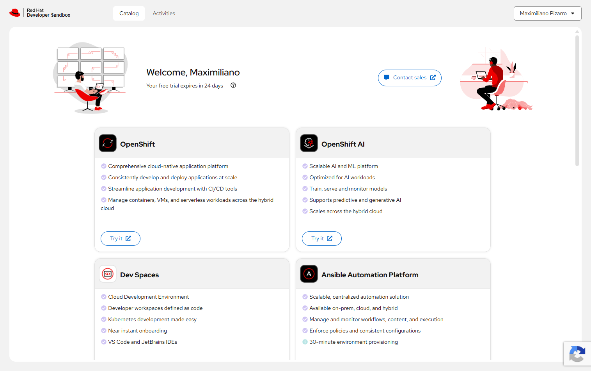
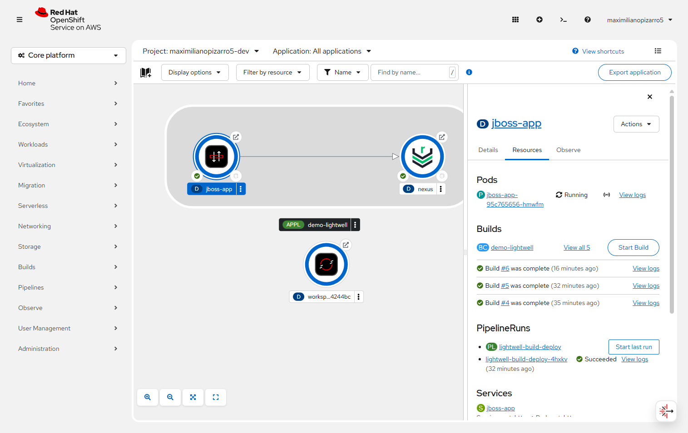
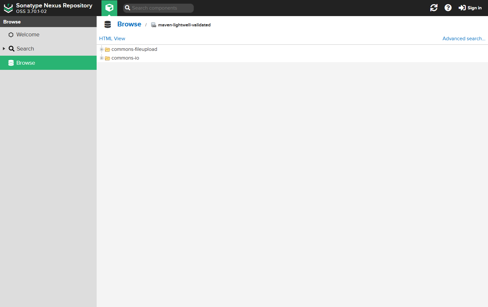
.rhlw artifacts.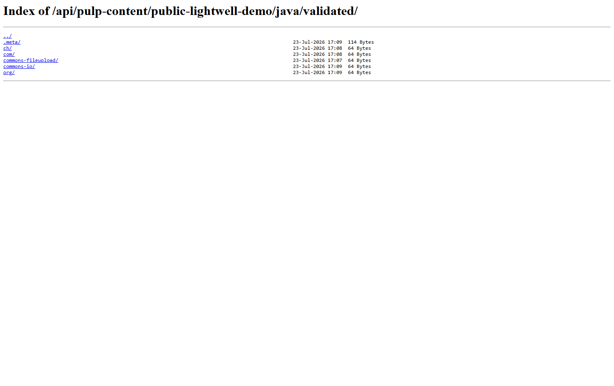
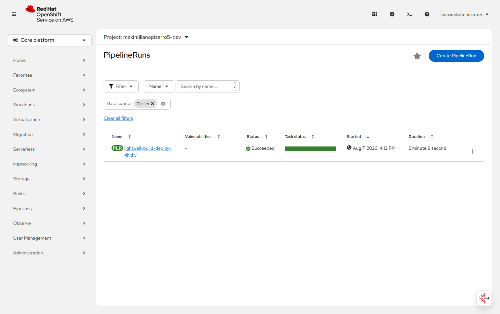

commons-io.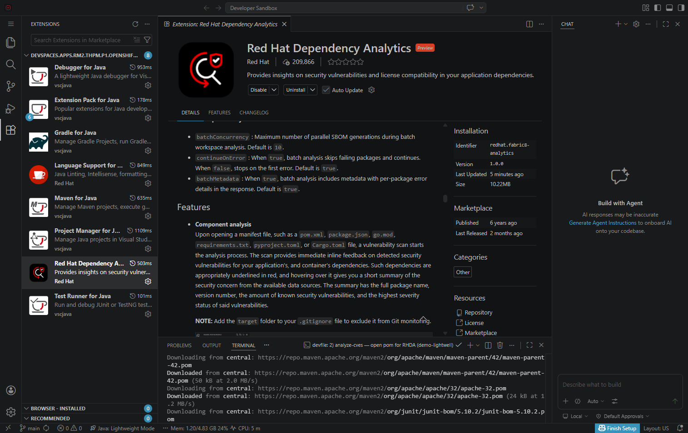
analyze-cves running.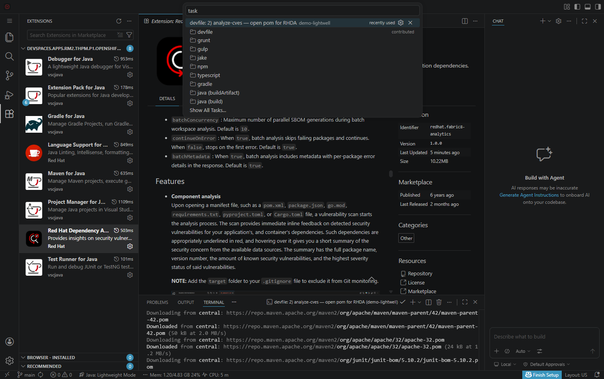
analyze-cves for RHDA on pom.xml.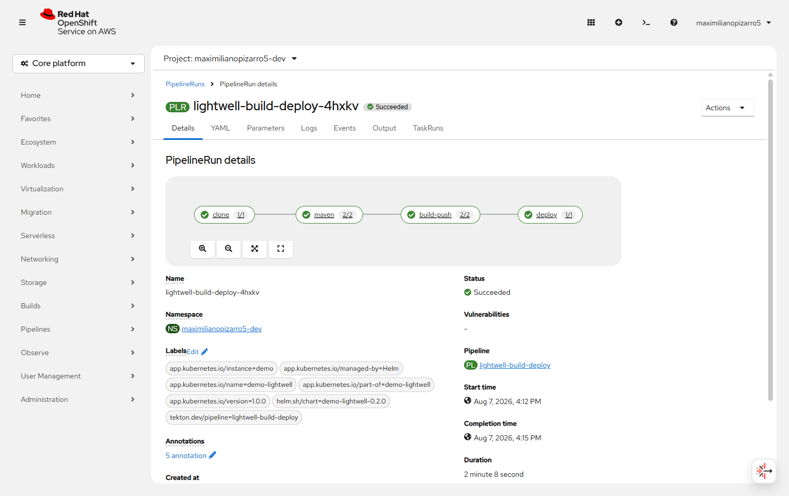
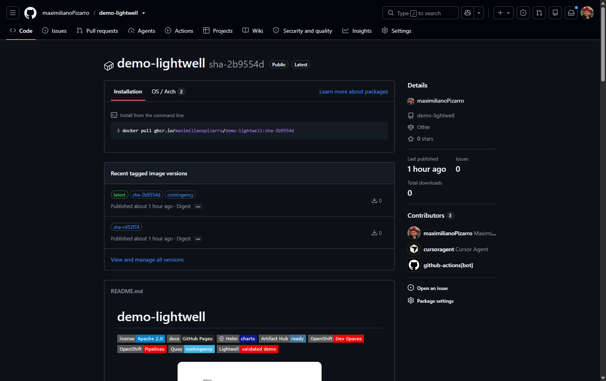
latest / contingency.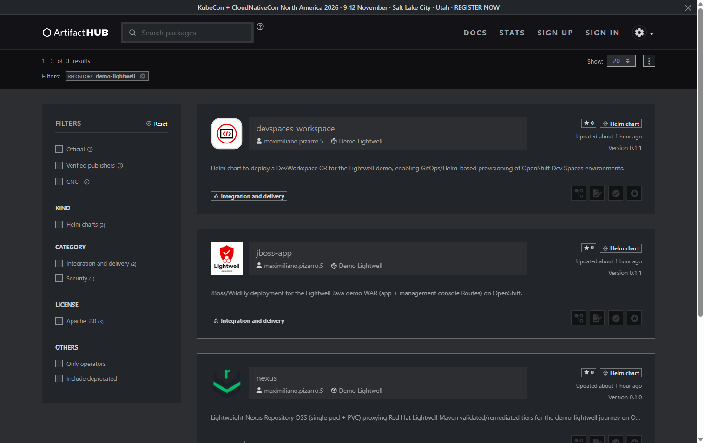
jboss-app, nexus, devspaces-workspace.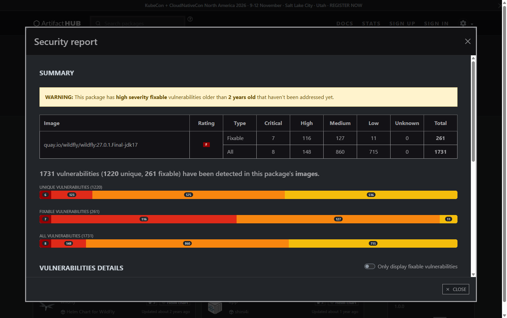
commons-io:2.11.0 CVE in WildFly layers..rhlw deps.commons-io.
Each chart ships a README.md so Artifact Hub can render a full description.
Repo index: charts/ ·
search on Artifact Hub.
Umbrella: secrets, Nexus, JBoss, Tekton PipelineRun, optional DevWorkspace — one helm upgrade --install.
WildFly WAR + app Route + HAL console Route. Image scan on Artifact Hub uses the public WildFly base.
Artifact Hub →Thin Nexus + PVC; configure Job wires Lightwell proxy with SA on the remote into maven-public.
Also published: devspaces-workspace (DevWorkspace CR for GitOps-style IDE provisioning).
This sandbox defaults to the public validated Lightwell demo index. With an active Lightwell Network membership, switch Nexus + Maven to the remediated tier (org service account, product URL, layout Strict) and re-run RHDA + rebuild.
| Demo (default) | Subscription | |
|---|---|---|
| Tier | Validated (public pulp demo) | Remediated |
| URL | …/public-lightwell-demo/java/validated/ |
https://packages.redhat.com/lightwell/java/remediated/ |
| Expect in RHDA | OSV findings + remediations available | Newer .rhlw-* builds; fewer open findings as coverage grows |
SLSA + SBOM (production)
This demo focuses on Lightwell remediations and CVE visibility. Generating an SBOM and attaching SLSA build provenance (attestations, policy gates) is out of scope here, but should be planned for a production secure supply-chain.